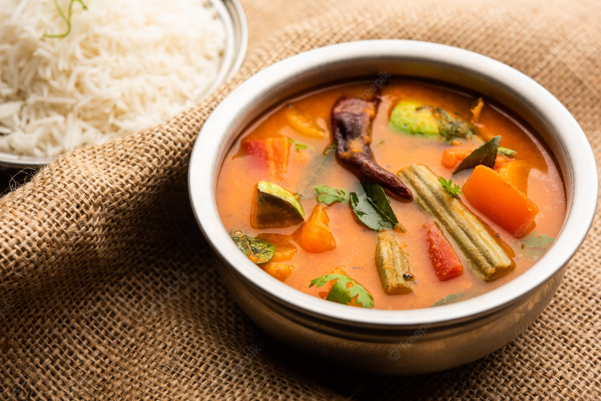

Sambar

It is dish unique to india, which is a like a lentil soup that goes well with rice, idly or whatever you are confortable eating with.
Ingredients
- 2-3 tbsps Sambar powder
- 200gms Red Gram
- 1 tbsp Red Chilli Powder
- 1 tbsp Jaggaery
- Salt
---Vegitables---
- Ladies Finger
- Brinjal/Egg plant
- Drumstick Pieces
- Carrot
- and Many more...
---Seasoning---
- Curry leaves
- Coriander
- Mustard Seeds
- Red Chillies
- 2 tsps Sunflower oil
- Jeera
Steps
- Pressure cook the Lentils(Red Gram) with a pinch of turmeric along with the vegitables.
- After 3 whistles, keep it aside.
- Keep flame in sim and add all the vegitables, sambar powder, Tamarind juice, Red chilli powder and salt.
- Let it boil.
- Once everything is cooked, in a seperate bowl add oil.
- keep the flame low add all the items in the seasoning and let it cook for 2 mins.
- After that add everything to the sambar.
- Done, Sambar is ready!!!
Back to Home Page